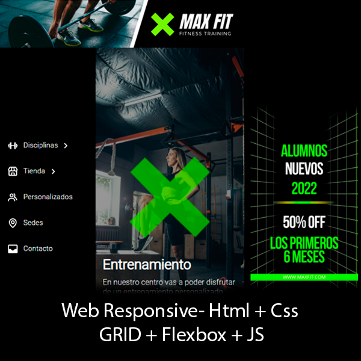

Estudiante autodidacta de programación y desarrollo web.
Actualmente me encuentro realizando el curso Full Stack Python del programa Codo a codo 4.0 del gobierno de la ciudad y esta web es una demostración de las herramientas aprendidas en este curso.
Pueden obtener más información mia en las siguientes redes (ficticias) de aquí debajo
</Portfolio>


Este portfolio muestra algunos de mis trabajos que fueron realizados como proyectos de estudio anteriores a Codo a codo 4.0.
La mayoria de estos tienen errores logicos de ser previos a algun tipo de estudio tutorizado y espero poder corregirlos luego con todo lo aprendido en esta etapa.